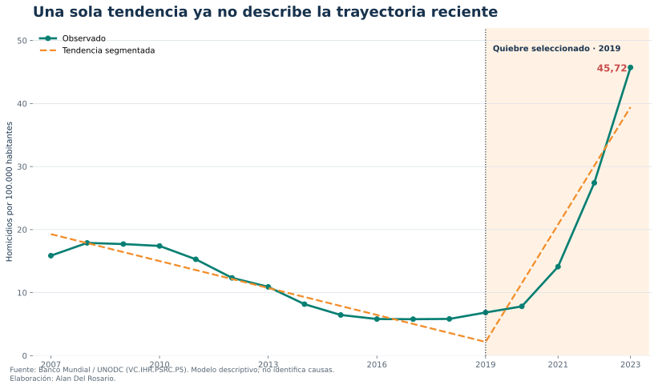
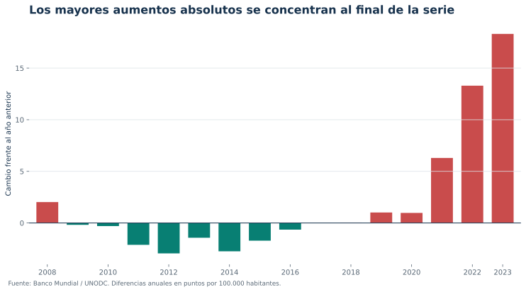
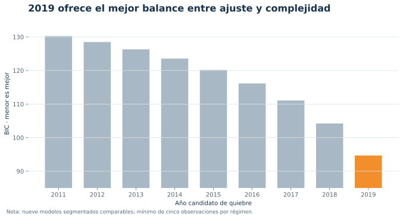

De descenso sostenido a aceleración
Cambio de régimen en la tasa de homicidios de Ecuador, 2007–2023
1 Resumen
Este estudio examina si una tendencia lineal única describe adecuadamente la tasa anual de homicidios intencionales de Ecuador entre 2007 y 2023. Se compara una tendencia global con modelos lineales segmentados para nueve fechas candidatas de quiebre, manteniendo un mínimo de cinco observaciones por régimen. La selección se realiza mediante el Criterio de Información Bayesiano (BIC) y se somete a sensibilidad en logaritmos y leave-one-out. El ejercicio identifica un cambio de pendiente en 2019 y una aceleración posterior pronunciada. El resultado es descriptivo: detecta inestabilidad en la trayectoria, pero no identifica sus causas.
Palabras clave: homicidios, cambio estructural, tendencia segmentada, seguridad, Ecuador.
JEL: C22, I18, K42.
2 Hallazgos principales
2.1 1 · La trayectoria cambia de régimen
El quiebre que minimiza el BIC se ubica en 2019. Antes del quiebre, la pendiente estimada es de -1,42 puntos por año; después, de +9,31 puntos por año.
2.2 2 · El último salto es material
La tasa de 2023 fue 45,72 por 100.000 habitantes, 66,8% por encima de 2022. Entre 2020 y 2023, el crecimiento anual compuesto fue 80,2%.
2.3 3 · El patrón sobrevive a pruebas de sensibilidad
La especificación en logaritmos también selecciona 2019. Al retirar una observación por vez, el mismo quiebre es elegido en 100,0% de las iteraciones.
3 Pregunta y marco analítico
La pregunta es deliberadamente acotada: ¿una sola tendencia temporal resume la trayectoria observada o los datos favorecen dos regímenes con pendientes distintas? No se estima el efecto de una política ni se adjudica el cambio a mercados ilícitos, instituciones o condiciones sociales. Esas explicaciones requieren covariables, teoría causal y un diseño de identificación distinto.
El concepto de homicidio intencional corresponde a una muerte ilícita infligida con intención de causar muerte o lesión grave; el indicador anual es agregado por UNODC y expresado por 100.000 habitantes (World Bank 2026).
4 Datos
La fuente es World Development Indicators del Banco Mundial, indicador VC.IHR.PSRC.P5, construido a partir de UNODC. Se utiliza 2007–2023 porque constituye el tramo continuo disponible: 17 observaciones anuales, sin imputación. Los años 2003–2006 quedan fuera del modelo por ausencia de dato. La descarga se ejecutó el 5 de julio de 2026 y la API reportó actualización al 1 de julio de 2026.

5 Método
Para cada año candidato \(\tau\) se estima:
\[ y_t = \alpha + \beta_1 t + \beta_2 (t-\tau)_+ + \varepsilon_t, \]
donde \((t-\tau)_+=\max(0,t-\tau)\). La pendiente anterior al quiebre es \(\beta_1\) y la posterior es \(\beta_1+\beta_2\). Se consideran nueve fechas entre 2011 y 2019; la restricción deja al menos cinco observaciones por régimen. La fecha seleccionada minimiza el BIC, una aplicación exploratoria del principio de elegir quiebres como minimizadores globales del error penalizado por complejidad (Bai y Perron 2003).
Por el tamaño reducido de la muestra, el ejercicio no se presenta como una prueba asintótica definitiva. Los intervalos usan covarianza HC1 y distribución t; la robustez se evalúa reestimando en logaritmos y retirando una observación por vez.
6 Resultados
| Indicador | Tendencia única | Modelo segmentado |
|---|---|---|
| BIC | 130,67 | 94,67 |
| Ventaja BIC del segmentado | — | 36,00 |
| R² ajustado | — | 0,889 |
| Pendiente antes de 2019 | — | -1,42 |
| Pendiente después de 2019 | — | +9,31 |
El quiebre seleccionado es 2019. La pendiente estimada antes de esa fecha es -1,42 puntos por año; después es +9,31. La tasa observada alcanza 45,72 en 2023, 66,8% por encima de 2022. Entre 2020 y 2023, el crecimiento anual compuesto es 80,2%.
La diferencia estadística es grande, pero el intervalo posterior refleja que solo hay cinco observaciones en el régimen reciente.

7 Robustez
La especificación logarítmica vuelve a seleccionar 2019. En la validación leave-one-out, que reestima todos los candidatos tras retirar cada año, 2019 conserva la mayor frecuencia de selección. El gráfico siguiente muestra que también es el mínimo de BIC en niveles; 2018 y 2017 son alternativas progresivamente menos favorecidas.

8 Discusión
El resultado central no es que “2019 causó” el aumento, sino que una representación con dos pendientes describe mucho mejor el patrón observado que una tendencia única. Para la gestión, esto implica que promedios de largo plazo pueden ocultar la velocidad del régimen reciente. Para investigación, delimita el siguiente paso: integrar registros subnacionales y variables sobre modalidad, territorio y perfil de víctimas para contrastar mecanismos específicos.
9 Limitaciones
- Diecisiete observaciones son una base pequeña para inferencia de series temporales.
- La tasa nacional oculta heterogeneidad territorial y por tipo de homicidio.
- La fecha de quiebre se selecciona dentro de una grilla; no representa una fecha causal.
- El último dato es 2023, por lo que el tablero no describe 2024–2026.
- Las revisiones de UNODC o de la fuente nacional pueden modificar la serie.
10 Reproducibilidad
Los datos, el código y las figuras de este documento son reproducibles a partir de la fuente pública citada. La investigación y el tablero ejecutivo se derivan siempre de los mismos resultados, por lo que ambos son consistentes entre sí.